WebLogic을 다운로드 및 설치 후 하나의 도메인을 생성하는 간략한 절차를 Windows 플랫폼의 WebLogic 12.1.3.0을 예로 하여 설명한다.
다운로드
2008년 4월 WebLogic을 개발한 BEA Systems 가 Oracle로 인수되면서 버전 9 이상부터는 Oracle 미들웨어 제품 다운로드 페이지에서 다운로드 할 수 있다.
http://www.oracle.com/technetwork/middleware/downloads/index.html
해당 웹 페이지에서 라이선스 동의 후 운영체제 플랫폼에 맞는 가장 최근에 릴리즈(release)된 WebLogic을 다운로드 받도록 한다.
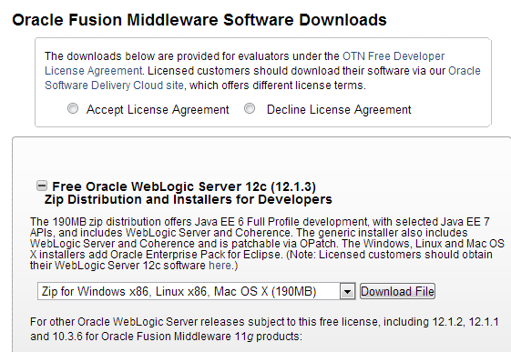
설치
다운로드 받은 파일을 실행하면 WebLogic 자동 인스톨러(installer)가 수행된다. 아래와 같은 절차로 WebLogic을 설치한다.
1. 시작 화면에서 다음을 선택 후 WebLogic 및 관련 미들웨어 제품이 설치될 경로를 지정한다.
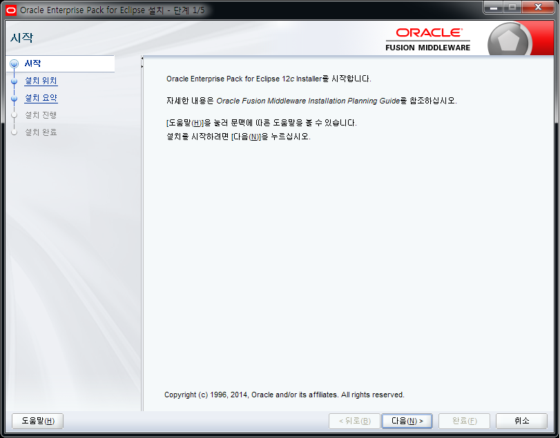 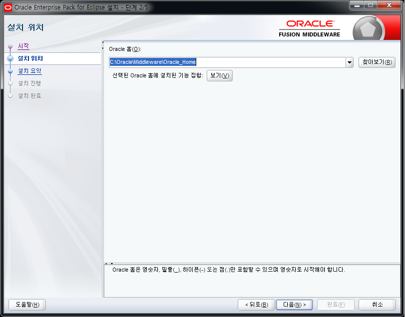
2. 설치 요약 확인 및 설치.
(여기서 지정한 WebLogic 의 설치경로는 추후 환경변수 WL_HOME 으로 식별된다.)
 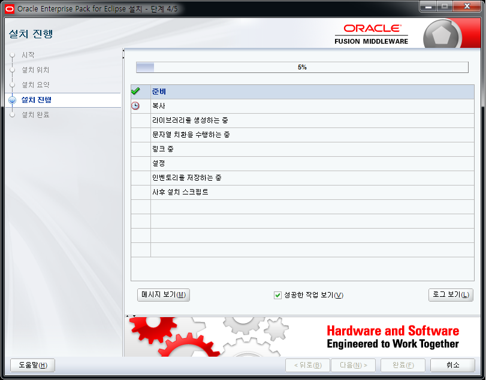
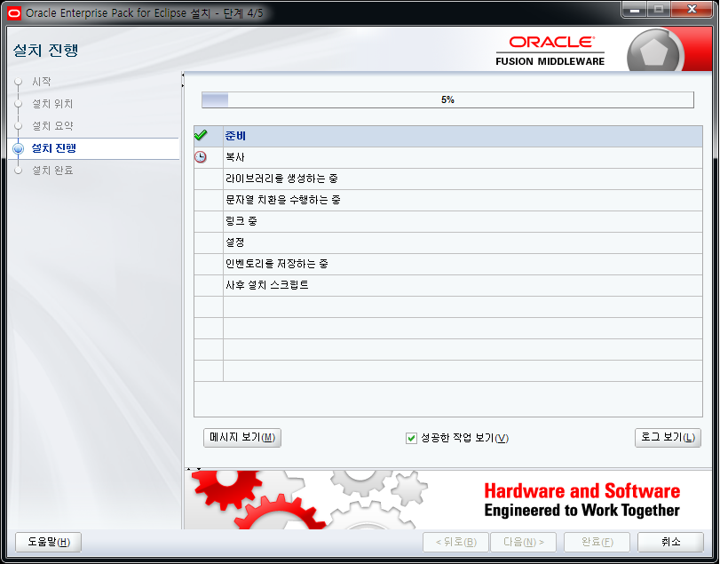
3. 설치 완료 확인
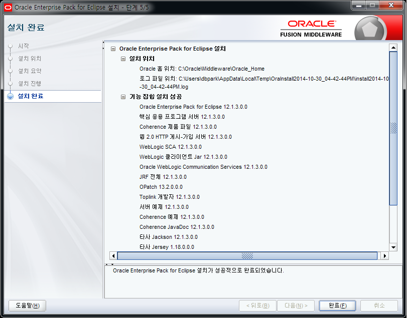
도메인 생성
설치 마법사(Configuration Wizard)를 사용하여 도메인을 생성할 수 있다.
아래와 같은 절차로 WebLogic을 설치한다.
1. 설치 마법사를 실행하여 새 도메인을 생성한다. ( 도메인 위치를 설정할 수 있다. ).
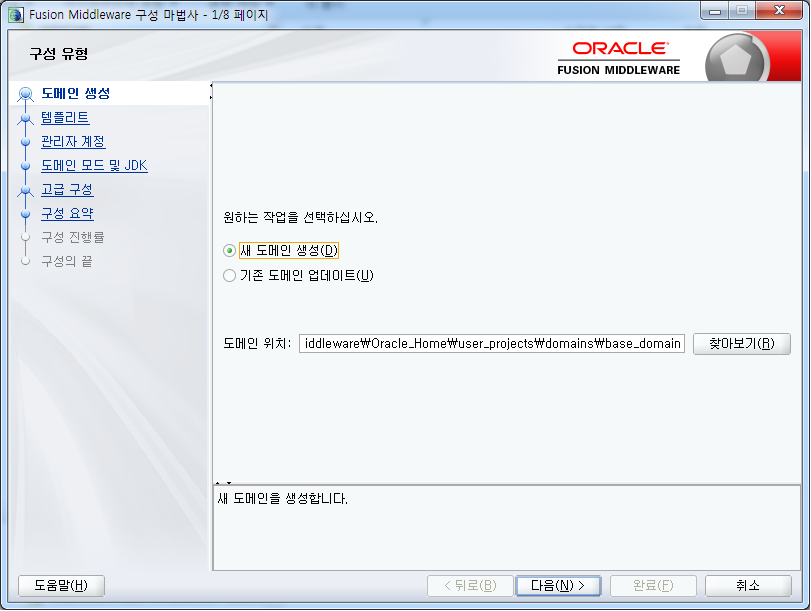 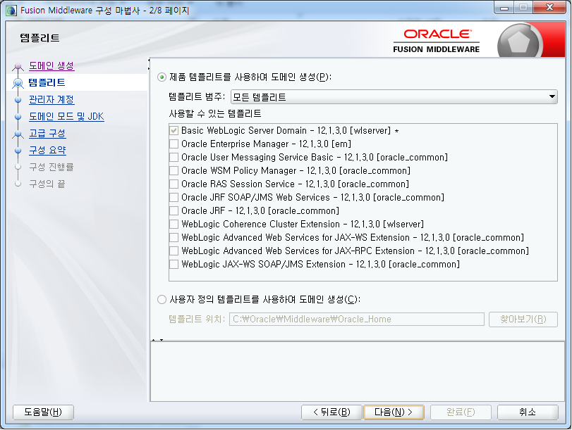
2. 관리 서버의 사용자 이름 및 비밀번호를 입력한다.
(여기서 지정한 도메인의 설치경로는 추후 환경변수 DOMAIN_HOME 으로 식별된다.)
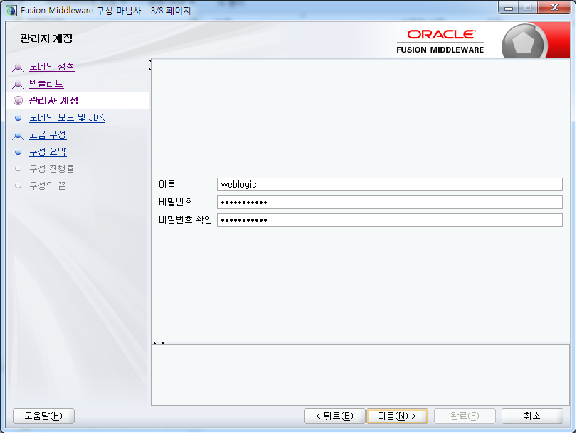
3. 도메인 관리 서버의 시작 모드와 JDK 설정을 한다.
- 시작 모드
테스트가 목적이므로 “개발 모드”로 선택한다.
개발 모드는 $DOMAIN_HOME/autodeploy 를 통하여 웹 응용프로그램을 자동으로 배치 및 변경할 수 있어 손쉬운 테스트가 가능하다.
- JDK
시작 모드를 선택하면 그에 적절한 JDK가 자동적으로 선택되므로 특별한 경우가 아니라면 별도로 선택하지 않아도 된다.
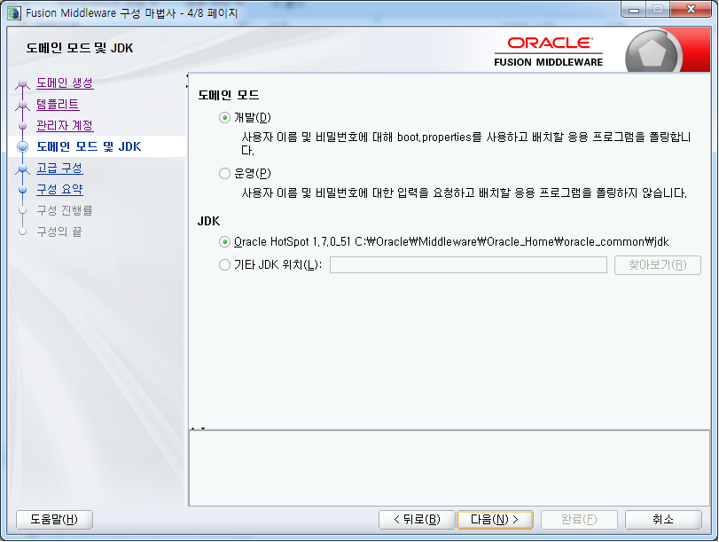
4. 관리 서버의 수신 포트와 같은 특별히 변경을 원하는 사항이 있다면 관련 항목을 선택 후 변경하도록 한다. 없다면 생략(NEXT)한다.
참고로 관리 서버는 기본적으로 7001 포트를 사용한다.
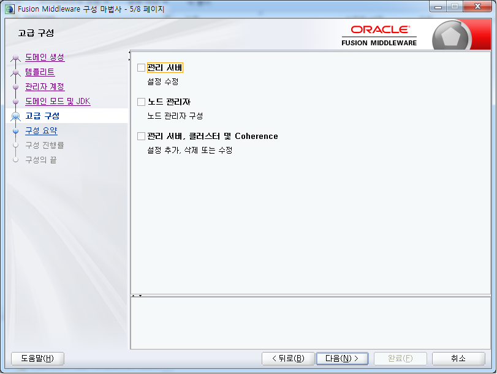
5. 도메인 생성이 모두 완료되면 “관리 서버 시작” 옵션을 체크한 상태에서 완료(Done)를 선택한다.
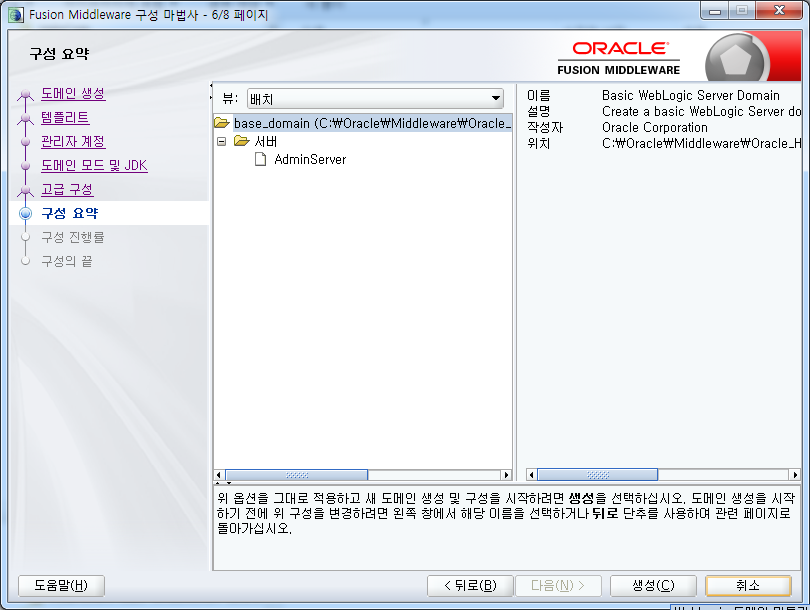
6. 설치 완료
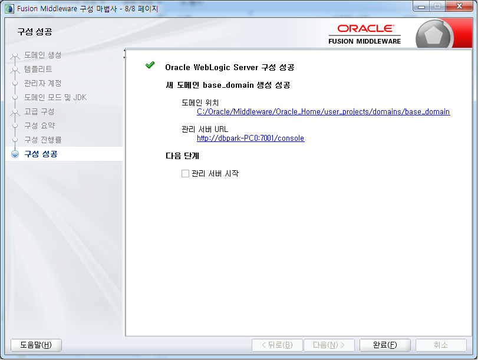
{kind=link}
{kind=link}
{kind=link}
{kind=link}
{kind=link}
{kind=link}
{kind=link}
{kind=link}
{kind=link}
{kind=link}
{kind=link}
{kind=link}
{kind=link}